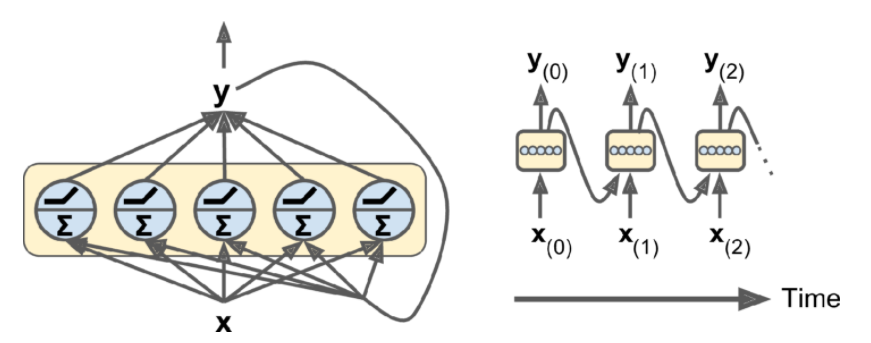
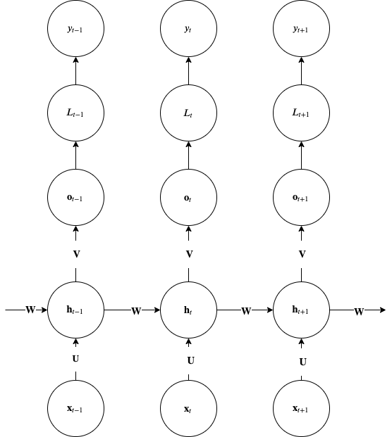
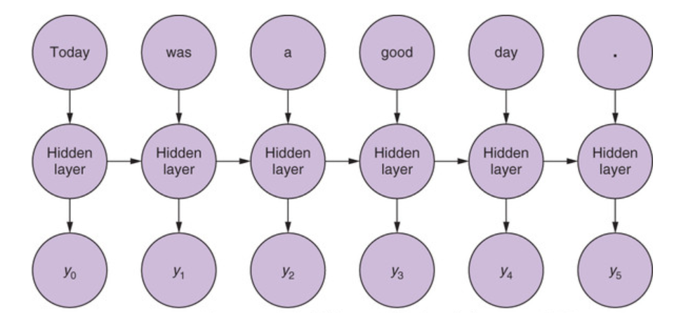
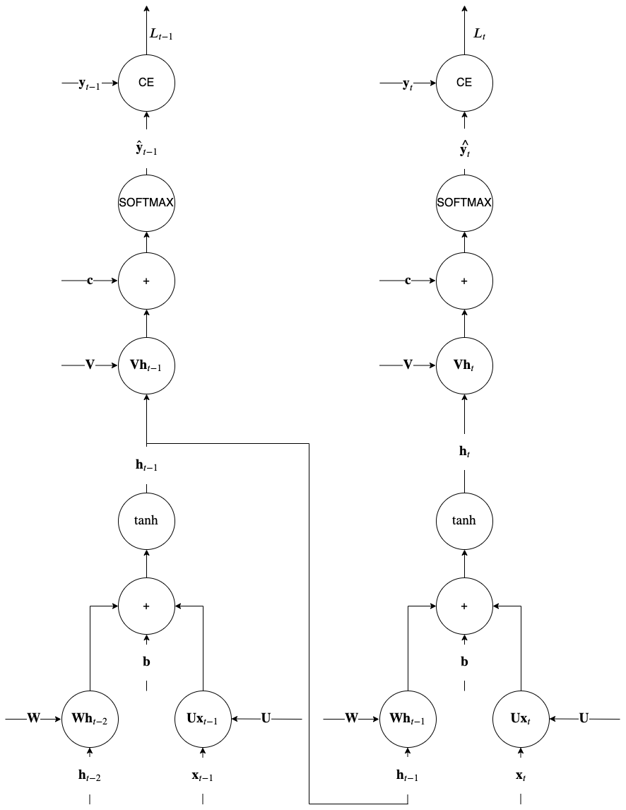
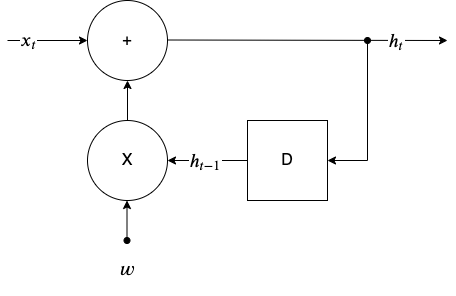
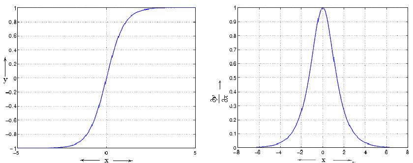

Simple RNN#
The simple RNN architecture with just a single layer of neurons that receive the input \(\mathbf{x}\) is shown below.
 Simple RNN with just a single layer of \(n_neurons\) mapping the input to the hidden-state at each time step
A more practical simple RNN architecture is shown below.

Simple RNN with recurrences between hidden units. This architecture can compute any computable function and therefore is a Universal Turing Machine.
Notice how the path from input \(\mathbf x_{t-1}\) affects the label \(\mathbf y_{t}\) and also the conditional independence between \(\mathbf y\) given \(\mathbf x\). Please note that this is not a computational graph rather one way to represent the hidden state transfer between recurrences.
Dimensioning Simple RNNs#
In the table below \(m\) is the number of examples in the mini-batch.
Variable |
Dimensions |
|---|---|
\(\mathbf{h}_t\) |
\(n_{neurons} \times 1\) or \(m \times n_{neurons}\) |
\(\mathbf{x}_t\) |
\(n_{input} \times 1\) or \(m \times n_{input}\) |
\(\mathbf{U}\) |
\(n_{neurons} \times n_{input}\) |
\(\mathbf{W}\) |
\(n_{neurons} \times n_{neurons}\) |
\(\mathbf{b}\) |
\(n_{neurons} \times 1\) |
\(\mathbf{V}\) |
\(n_{output} \times n_{neurons}\) |
\(\mathbf{o}\) |
\(n_{output} \times 1\) |
\(\mathbf{c}\) |
\(n_{output} \times 1\) |
Please note that there may be multiple layers that can be stacked on top of each other and they can individually keep a hidden state.
Forward Propagation#
This network maps the input sequence to a sequence of the same length and implements the following forward pass:
Notice that RNNs can model very generic distributions \(\log p_{model}(\mathbf x, \mathbf y ; \mathbf w)\). The simple RNN architecture above, effectively models the posterior distribution \(\log p_{model}(\mathbf y | \mathbf x ; \mathbf w)\) and based on a conditional independence assumption it factorizes into \(\sum_t \log p_{model}(y_t | \mathbf x_1, \dots, \mathbf x_t ; \mathbf w)\).
Note that by connecting the \(\mathbf y_{t-1}\) to \(\mathbf h_t\) via a matrix e.g. \(\mathbf R\) we can avoid this simplifying assumption and be able to model an arbitrary distribution \(\log p_{model}(\mathbf y | \mathbf x ; \mathbf w)\). In other words just like in the other DNN architectures, connectivity directly affects the representational capacity of the hypothesis set.
In many instances we have problems where it only matters the label \(y_\tau\) at the end of the sequence. Lets say that you are classifying speech or video inside the cabin of a car to detect the psychological state of the driver. The same architecture shown above can also represent such problems - the only difference is the only the \(\mathbf o_\tau\), \(L_\tau\) and \(y_\tau\) will be considered.
Lets see an example to understand better the forward propagation equations.
 Example sentence as input to the RNN
In the figure above you have a hypothetical document (a sentence) that is broken into what in natural language processing called tokens. Lets say that a token is a word in this case. In the simpler case where we need a classification of the whole document, given that \(\tau=6\), we are going to receive at t=1, the first token \(\mathbf x_1\) and with an input hidden state \(\mathbf h_0 = 0\) we will calculate the forward equations for \(\mathbf h_1\), ignoring the output \(\mathbf o_1\) and repeat the unrolling when the next input \(\mathbf x_2\) comes in until we reach the end of sentence token \(\mathbf x_6\) which in this case will calculate the output \(y_6\) and loss
where \(\mathbf w = \{ \mathbf W, \mathbf U, \mathbf V, \mathbf b, \mathbf c \}\).
Back-Propagation Through Time (BPTT)#
Lets now see how the training through backward propagation would work for RNNs.
 Understanding RNN memory through BPTT procedure
Backpropagation is similar to that of feed-forward (FF) networks simply because the unrolled architecture resembles a FF one. But there is an important difference and we explain this using the above computational graph for the unrolled recurrences \(t\) and \(t-1\). During computation of the variable \(\mathbf h_t\) we use the value of the variable \(\mathbf h_{t-1}\) calculated in the previous recurrence. So when we apply the chain rule in the backward phase of BP, for all nodes that involve the such variables with recurrent dependencies, the end result is that non local gradients from previous backpropagation steps (\(t\) in the figure) appear. This is effectively why we say that simple RNNs feature memory. This is in contrast to the FF network case where during BP only local to each gate gradients where involved as we have seen in the the DNN chapter.
The key point to notice in the backpropagation in recurrence \(t-1\) is the junction between \(\tanh\) and \(\mathbf V \mathbf h_{t-1}\). This junction brings in the gradient \(\nabla_{\mathbf h_{t-1}}L_t\) from the backpropagation of the \(\mathbf W h_{t-1}\) node in recurrence \(t\) and just because its a junction, it is added to the backpropagated gradient from above in the current recurrence \(t-1\) i.e.
Ian Goodfellow’s book section 10.2.2 provides the exact equations - please note that you need to know only the intuition behind computational graphs for RNNs. In practice BPTT is truncated to avoid having to do one full forward pass and one full reverse pass through the training dataset of a e.g. language model that is usually very large, to do a single gradient update.
Vanishing or exploding gradients#
In the figure below we have drafted a conceptual version of what is happening with recurrences over time. Its called an infinite impulse response filter for reasons that will be apparent shortly.
 Infinite Impulse Response (IIR) filter with weight \(w\)
With \(D\) denoting a unit delay, the recurrence formula for this system is:
where \(w\)is a weight (a scalar). Lets consider what happens when an impulse, \(x_t = \delta_t\) is fed at the input of this system with \(w=-0.9\).
With \(w=-0.9\), the h_t (called impulse response) follows a decaying exponential envelope while obviously with \(w > 1.0\) it would follow an exponentially increasing envelope. Such recurrences if continue will result in vanishing or exploding responses long after the impulse showed up in the input \(t=0\).
Using this primitive IIR filter as an example, we can see that the weight plays a crucial role in the impulse response. In a similar fashion, the RNN hidden state recurrence, in the backwards pass of BP that extends from the \(t=\tau\) to \(t=1\) can make the gradient, when \(\tau\) is large, either vanish or explode. Instead of a scalar \(w\) we have matrices \(\mathbf W\) and instead of \(h\) we have gradients \(\nabla_{\mathbf h_{t}}L_{t}\). This is discussed in this paper.
Simplistically thinking, the gradient of the \(\tanh\) non-linearity shown below, is between 0 and 1 suppressing the gradients and slowing down training.
 Derivative of \(\tanh\) non-linearity
Similar the successive application of the \(W\) matrix is causing explosive gradients as simplistically (ignoring the non-linearity) the hidden state can be written as
making after \(\tau\) steps
If the magnitude of the eigenvalues are less than 1.0 the matrix will create vanishing gradients as it is involved in the \(\nabla_{\mathbf h_{t}}L_{t}\) expression (see equations in section 10.2.2 in the textbook). This issue is addressed using the LSTM type of cells.